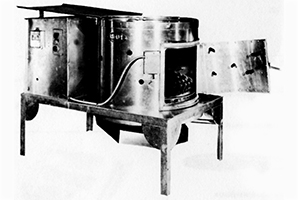

Ashley sure-pick
Call for Pricing US and Canada 1-800-521-4886
Model sp-30 (Shown)
Other Sizes Available SP-23 and SP-38
Proven Performer Worldwide
For Over 40 Years
These reliable Ashley Sure-Picks are unexcelled in quality
and service. They are available in three sizes: Model SP-23,
SP-30 and SP-38. They will pick to perfection, fryers, fowl,
game birds and Turkeys. Ashley Machine Company has
been manufacturing quality poultry dressing equipment for
over 40 years, and feels that the Sure-Pick is one of the
leaders of their complete line of dressing equipment.
The Feather Exhaust, a feature developed by Ashley,
helps the processor with feather handling problems. The
Automatic Unloading Door is self-closing. The door latch is
operated by the start button, which simultaneously starts
the timer and opens the automatic water valve. The work
shelf, feather exhaust, and automatic door are standard
features, however adjustable legs and catch table are
optional features for the SP-30 and SP-38 pickers.
View Sure-Pick Technical Sheet PDF
Since 1940 Ashley has been supplying performance equipment to the poultry processing industry worldwide.